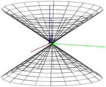

26.13.1 Cones
The
cone
command creates cones.
cone
takes three arguments:
A
, a point.
v
, a direction vector.
θ, a real number.
cone(
A
,
v
,θ
)
returns and draws the cone with vertex
A
, opening in the direction
v
with an aperture of 2θ.
Example
cone
([0,1,0],[0,0,1],
pi
/3)
